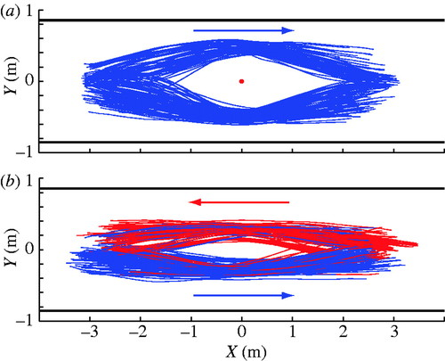

L'Evitement des piétons
Dans les foules humaines, de nombreux comportements collectif résultent d'un processus d'auto-organisation basé sur des interactions entre les individus. Cependant, les modèles des foules manquent de vérification expérimentale au niveau individuel, et les mécanismes locaux sos-jacents à la formation de modèles collectifs ne sont pas encore connu dans les détails. Ici l'objectif était de comprendre comment les piétons s'évitent, afin de permettre de comprendre les lois qui prévalent lors des interactions.
Protocole
L'expérience, fait passé un piéton dans un couloir, sous trois formes différentes: sans interaction, en réponse a une piéton immobile, en réponse à un piéton bougeant dans la direction opposée.La comparaison des trajectoires sans et avec des interactions leur a permi de quantifier l'effet comportementale des interactions. C'est ainsi qu'ils ont eu 20 femmes et 20 hommes, agé de 18 à 30 ans, ne connaissant pas la finalité de l'expérience qui ont accepté de participer à l'expérience. Il pouvait alors observer attentivement comment les piétons réagissait grâce à des caméras, il a ensuite du reprendre les vidéos, pour analyser les images. Au final ce sont 8 heures d'expériences qui ont permis de trouver une partie de la réponse. Sur le graphique ci dessous, vous pouvez voir les observations réalisés lorsque l'individu évite un piéton immobile et en dessous lorsque deux piétons se rencontrent. Résultats et Impacts :
Le graphique révèle donc que les individus lors d'une rencontre ont tendance à s'éviter par la droite, en réalité 81% des participants ont naturellement choisit le côté droit pour s'esquiver, ainsi la collision n'arrive que peu souvent car naturellement on s'évite par le même côté, vous comprenez donc que les erreurs viennent des gens qui ne sont pas dans ce pourcentage d'esquive par la droite, si l'un choisit le côté gauche alors c'est la catastrophe (sauf si vous avez des livres dans la main et que vous allez rencontrer votre âme soeur). Après cela, on a donc conclut que les Français s'esquivent majoritairement par la droite, tandis que les Japonais s'esquive à gauche par exemple. L'esquive des piétons est enfaite un phénomène culturelle, si un jour vous essayer d'esquiver par la gauche, et que vous vous retrouver à percuter un autre piéton, alors vous allez à force de faire cette erreur, naturellement éviter par la droite. Ainsi plus on fait d'erreur plus on finit par esquiver dans le même sens comme les personnes de notre pays, région, ect, c'est ainsi qu'une sorte de convention apparaît et que chacun finit par s'éviter du même sens (à quelques détails près) Cette expérience est donc un pas de plus dans la compréhension du mouvement des foules, comprendre comment les piétons s'esquivent permet de mieux comprendre leurs sens de circulation et de mieux prévoir leurs déplacements.Chercheur et lien pour en savoir plus: